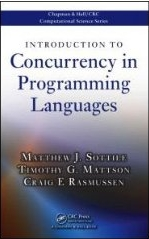
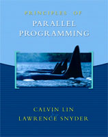
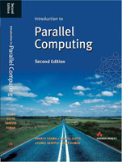
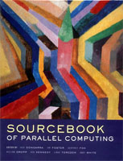
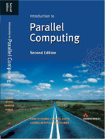
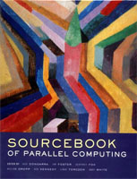

Resources for CS 267, Spring 2013
(note: please email the GSIs if you find broken or mislabeled links)
Previous class pages: [
2011 |
2010 |
2009 |
2008 |
2007 |
2006 |
2005 |
2002 |
2001 |
1999 |
1997 |
1996 ]
Find here references to online resources,
such as parallel languages, libraries, utilities, reference manuals
and tutorials that were used in past years.
Previous final projects: [
2010 |
2009 |
2006 suggestions |
2002 suggestions |
1997 |
1996,
1996 suggestions |
1995 |
1994 |
1993
]
Use this to get an early idea of how your own final project may look like.


 





- G. Hager and G. Wellein 2010. Introduction to High Performance Computing for Scientists and Engineers, CRC Press.
- M. Sottile, T.G. Mattson, and C.E. Rasmussen 2009. Introduction to Concurrency in Programming Languages, Chapman & Hall/CRC Computational Science.
- Lin, C., and Snyder, L. 2008. Principles of Parallel Programming, Addison Wesley.
- Mattson, T. G., Sanders, B. A., and Massingill, B. L. 2004. Patterns for Parallel Programming, Addison Wesley.
- Grama, A., Gupta, A., Karypis, G., and Kumar, V. 2003. Introduction to Parallel Computing, Second Edition, Addison Wesley.
- Dongarra, J., et al. 2002. The Sourcebook of Parallel Computing, Morgan Kaufmann.
- Goedecker, S., and Hoisie, A. 2001. Performance Optimization of Numerically Intensive Codes, Society for Industrial Mathematics.
- Foster, I. 1995. Designing and Building Parallel Programs, Addison Wesley, also available online.
Relevant Papers
Obtaining a NERSC account
There are 3 steps to obtain a NERSC account.
The GSIs will take care of step 1 by adding the names on the class list to the CS267 repository (mp309).
You must complete steps 2 and 3. For step 2, please read the NERSC Computer Use Policies
so you can sign a form in class Thursday saying that you have read the rules, and we can get started getting you a computer account.
Step 3 is setting your password.
You will need this account to do the homework!
When submitting the NERSC Computer Use Policies Form:
"Organization" = the campus you are attending (eg, UC-Berkeley or UC-Davis),
"NERSC principal investigator" = Kathy Yelick, and
"Repo name" = mp309
Assignments
[ Back to the Course Page ]